AVIV ScoutRoute Guide
AVIV ScoutRoute Guide⚓︎
This page contains information about installing and using the AVIV ScoutRoute mobile application at the Clark County Walk/Roll Event.
Installation⚓︎
This section covers the installation of the AVIV ScoutRoute mobile app for both Android and iOS users.
Step 1: Register⚓︎
-
First, scan the QR code below or open the following link:
https://portal.tdei.us/register?code=NDAV26HIJ


Note: If you already have a TDEI Portal account, skip the next step. Instead, scroll to the bottom of the page and select "Sign in"
-
Next, register for a TDEI Portal account by entering your information into the signup form
You must enter a First Name, Email Id, and Password, then agree to the Terms and Conditions. All other fields are optional.
Password requirements: Minimum of 8 characters in length; requires at least one lower case letter, one upper case letter, one special character, and a number.
After entering your information, select "Create Account"


-
After successfully creating your account, you will advance to a page that says "Registration Complete. Click Continue to proceed." Select the "Continue" button.


Step 2: Install⚓︎
Installation instructions are different for Android and iOS users. If you use an Apple device, skip ahead to the iOS section.
Android⚓︎
-
On the next screen, titled "Continue in our App", select "Install Android App"
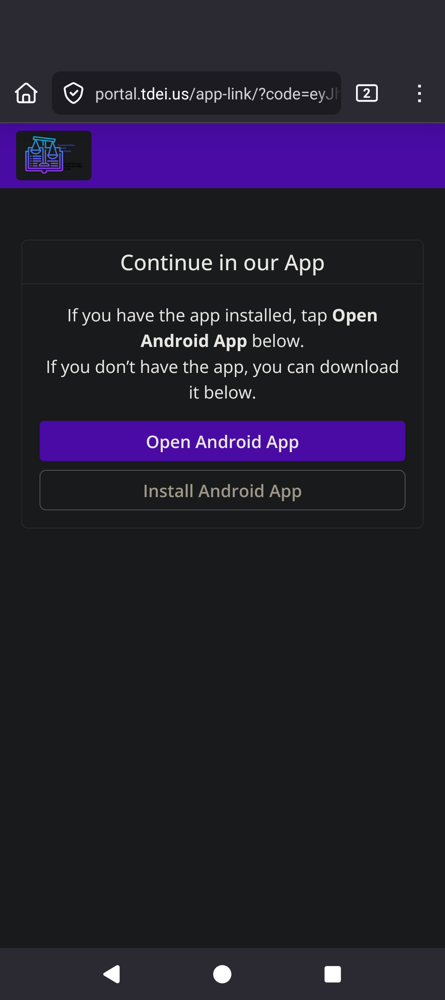
-
This will open a new page: "Firebase App Distribution". Enter your Email and then select the "Sign up" button.
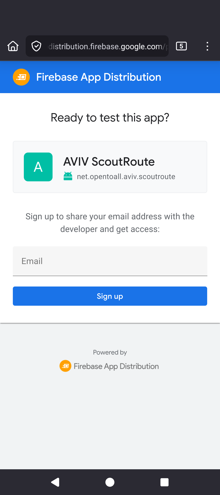
-
After entering your Email, the page should update to say "You're in!"

-
Within the next few minutes, you should receive an email titled "Confirm your email to test AVIV ScoutRoute for Android".
Accept the invitation
-
Open the email on your mobile device.
-
Select "Get started"
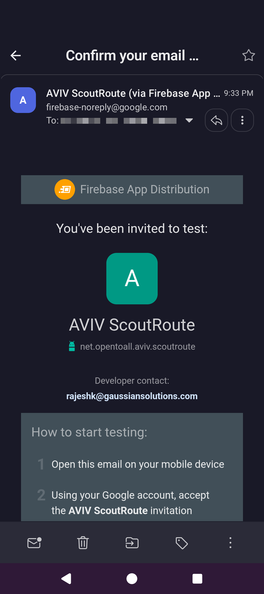 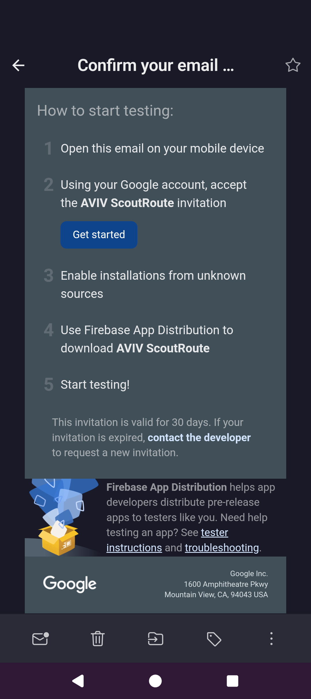
-
Sign in with your Google account.
-
Check the checkbox then select "Accept invitation"
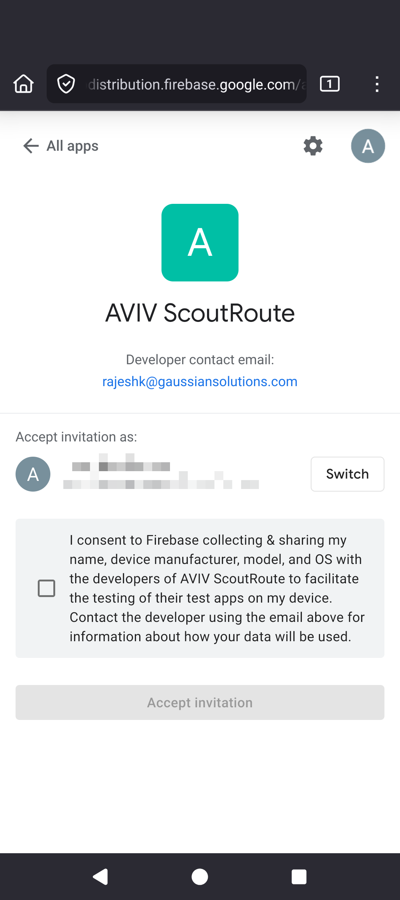
Download and install
-
Select "Download" (not "Download App Tester"!)
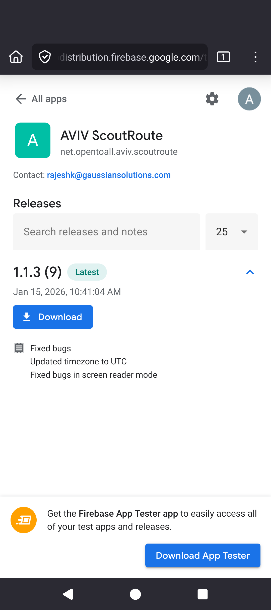
-
A popup will appear, saying "Download file? (136 MB) app.apk". Select "Download"

-
Once downloaded, a popup will appear, saying "Install this app? AVIV ScoutRoute". Select "Install"
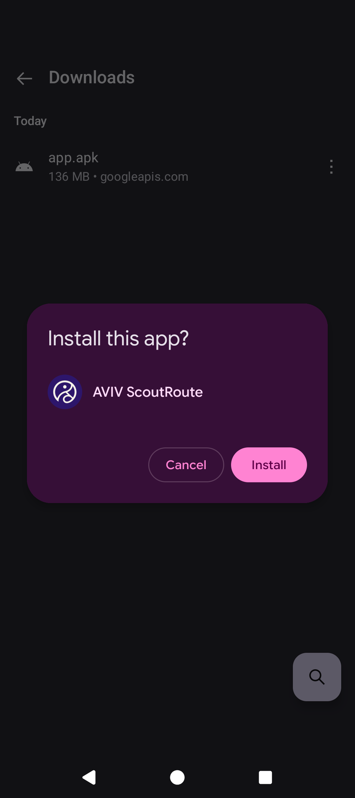
-
Once installed, a popup will appear, saying "App installed: AVIV ScoutRoute". Select "Open"

-
Once opened, a popup will appear, saying "Allow AVIV ScoutRoute to access this device's location?" Select "Precise" and "While using the app"
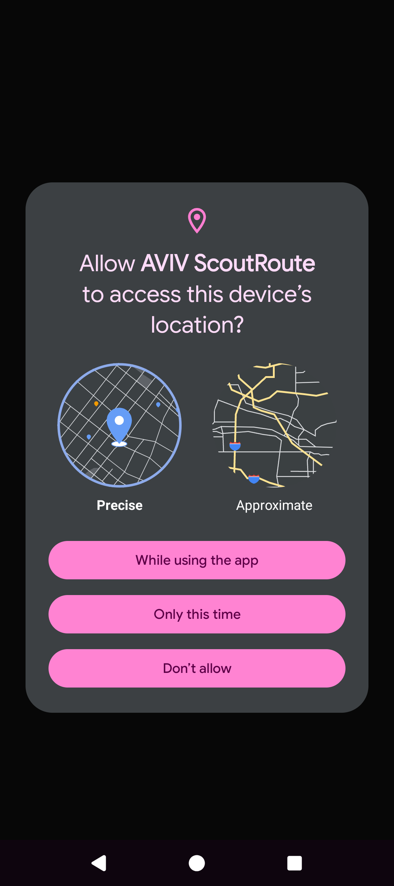
-
Once allowed, a final popup will appear, saying "Allow AVIV ScoutRoute to send you notifications?" Select "Allow"
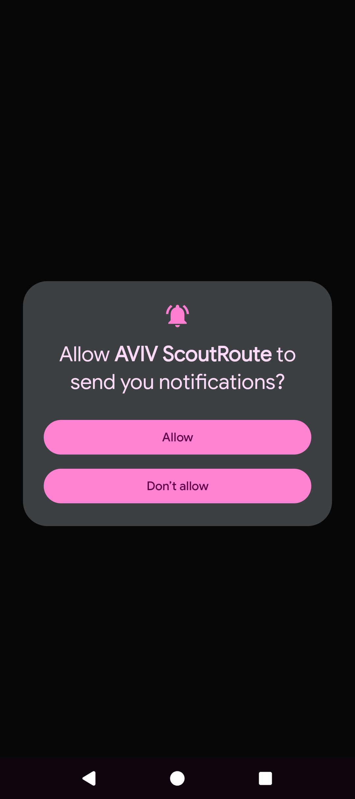
You are now ready to start using AVIV ScoutRoute! Skip ahead to the Usage section.
iOS (Apple)⚓︎
-
On the next screen, titled "Continue in our App", select "Install iOS App"

-
An "Open in "App Store"?" popup will appear. Select "Open"
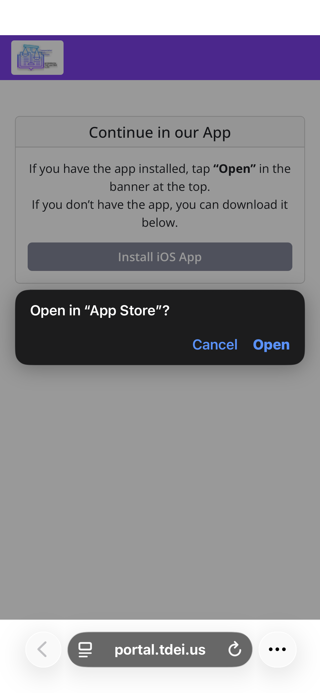
-
The Apple App Store app will open to the AVIV ScoutRoute page.
-
Select the "Download" button.
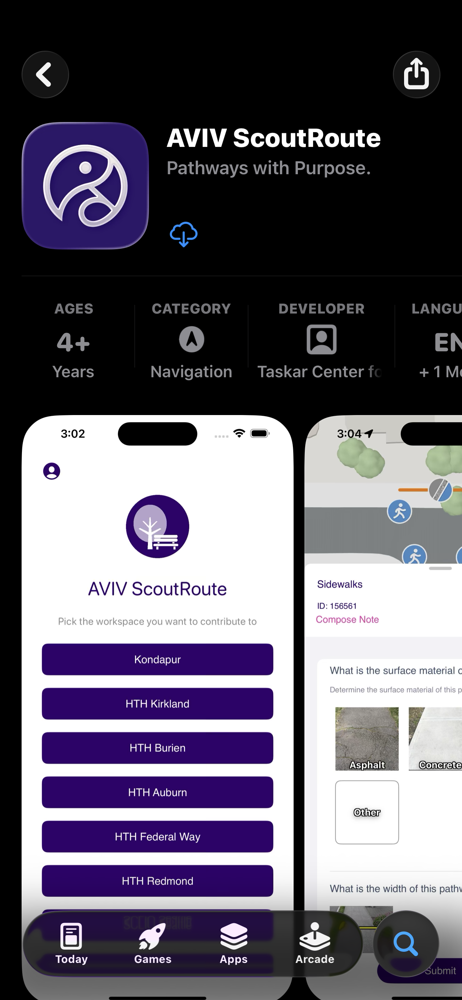
-
Once the download and installation is complete, select the "Open" button.
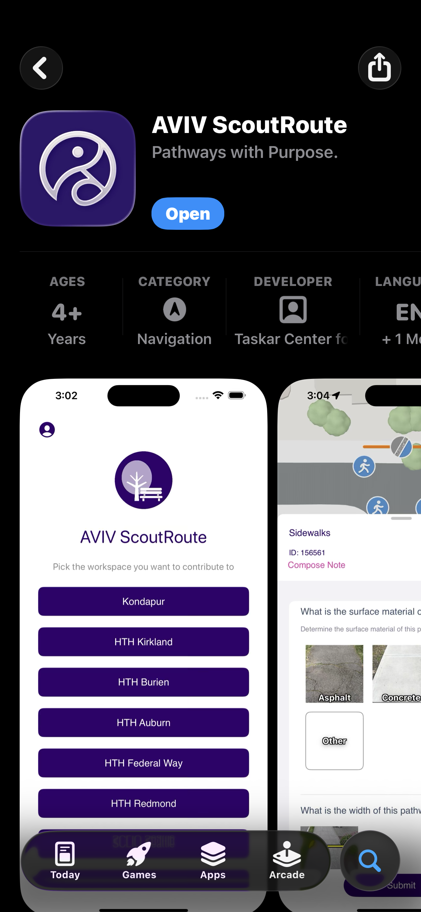
-
When prompted to "Allow "AVIV ScoutRoute" to use your location?", ensure "Precise: On" is selected and then select the "Allow While Using App" button.
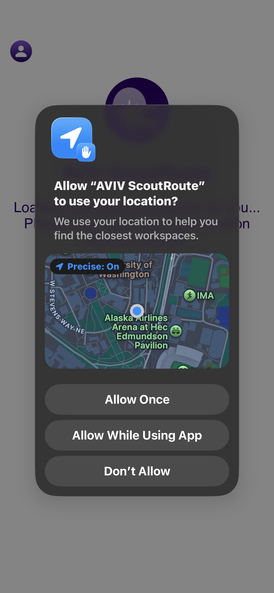
You are now ready to start using AVIV ScoutRoute!
Usage⚓︎
This section covers the use of the AVIV ScoutRoute mobile application at the Clark County Walk/Roll Event.
Select the Workspace⚓︎
-
Open the AVIV ScoutRoute app on your mobile device
-
Log in using the email and password you registered with in Step 1.
-
On the home screen, you will see a list of workspaces. Select "NDA Vancouver"
Using VoiceOver, the screen will say "AVIV ScoutRoute: Pick the workspace you want to contribute to" with a list of workspaces.
Note: Because you registered using the event referral code, you have been automatically added to the correct project group (SCLIO Vancouver) and the correct workspace (NDA Vancouver) should be visible.
-
The app will now display available quests in the Vancouver, WA area!
Understanding Quests⚓︎
Quests in AVIV ScoutRoute are small pieces of information to gather about the built environment. Each quest type is represented by a circular icon on the map:
| Icon | Quest Type | Description |
|---|---|---|
| Bus | Bus Stops | Quests about a bus stop location |
| Pedestrian inside pathway | Sidewalks | Covers a stretch of the pedestrian sidepath along the road |
| Pedestrian on marked crossing | Crossings | Pertains to a crossing that intersects with vehicle traffic |
| Traffic light | Intersections | Questions about a given intersection as a whole |
| Car | Driveway Points | Location of a sidewalk-driveway intersection |
Tip: Quest icons stack up to keep the map easy to see. Make sure you zoom in to see every available quest!
Finding Quests On Location⚓︎
When you are physically present at the event location:
-
Ensure location services are enabled on your device
-
The app will automatically show quests near your current location
-
Travel along the route and tap on quest icons as you encounter them
-
Answer the questions based on your direct observations of the environment
Downloading Data for Remote Access⚓︎
Note: When opening the NDA Vancouver workspace from outside of Vancouver, WA, a message may pop up saying "Download error. Send an error report to the developer?" This is expected, as AVIV ScoutRoute is intended for use during on-the-ground, at-location surveys. Click "Cancel" and move the map to the Vancouver, WA area before continuing.
If you want to preview quests remotely (not on-location) or preload data (for example, on WiFi before beginning the walkabout, instead of using mobile data):
-
Open the app, log in, and select the "NDA Vancouver" workspace
-
Navigate the map to the Vancouver, WA area (from Clark College to Washington Street)
-
Select the Menu in the top bar
-
Select "Download data here"
-
The app will download all quest data for the visible area on your screen
Completing a Quest⚓︎
-
Tap on a quest icon to open the quest details
-
Read the question and observe the feature being asked about
-
Provide your answer using one of the following input types:
- Single Select: Choose one answer that best represents your observation
- Numeric Entry: Enter a number using the on-screen keypad (e.g., sidewalk width in inches)
- Multi-Select: Select one or more applicable options
- Free Form Text: Enter a brief text response
-
Review your answer to ensure accuracy
-
Tap "Submit" to send the information
Once submitted, the quest will disappear from the map.
Hiding and Unhiding Elements⚓︎
If you want to temporarily skip a quest:
-
Tap on the quest icon to open it
-
Select "Hide this" to remove it from the map temporarily
To restore hidden quests:
-
Open Settings > Manage Quests
-
View the Hidden Elements section
-
Tap "Unhide All" or select individual elements to restore
Undoing Changes⚓︎
If you made a mistake:
-
Tap the Undo button
-
Review the list of your recent edits
-
Select an edit and tap Revert to undo it
Additional Resources⚓︎
TCAT Wiki Documentation⚓︎
- AVIV ScoutRoute - Overview of AVIV ScoutRoute and related guides
- AVIV ScoutRoute User Manual - Complete installation and usage guide
- TDEI - Learn more about the Transportation Data Exchange Initiative
- OpenSidewalks - Learn about the OpenSidewalks data standard
External Resources⚓︎
Contact⚓︎
If you encounter any issues or have questions, please contact the TCAT team at uwtcat@uw.edu.